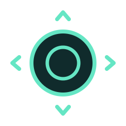
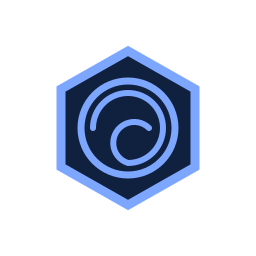

Normal
Matter: the extraordinary inside the ordinary
CURIOSITY BEYOND THE ARENA
Start with a spark of curiosity. Follow it from the matter in your hand to light, elusive neutrinos and the remains of distant stars.
Our game cast mixes elementary particles, quantum ideas, astronomical objects and invented abilities. These stories explain the real inspiration and where the game departs from it. Wormholes remain hypothetical; Repulsor and Direction are fictional identities, not recognised particle species.
Matter: the extraordinary inside the ordinary

Quantum entanglement: a shared story across distance

Black holes: the boundary light cannot cross outward

Comets: frozen messengers from the early Solar System

Repulsion: the invisible push between charges

Pulsars: the lighthouses made from stellar remnants

Quantum superposition: more than a hidden coin flip
Direction and momentum: why an arrow matters

Wormholes: a mathematical possibility, not a discovered shortcut

Gravity and stars: how a cloud becomes a sun

Photons: the energy carried by light

Magnetars: stellar remnants with extreme magnetic fields

The Higgs field: a discovery about particle mass

Neutrinos: the elusive travellers through matter
Antimatter: the partner matter did not quite erase
Entangled Chaos turns these ideas into a fictional cosmic puzzle. Discover abilities, time your taps and build your own chains.
Available on Android. iOS is awaiting App Store review; check current availability. Optional purchases and rewarded ads depend on connectivity and availability.